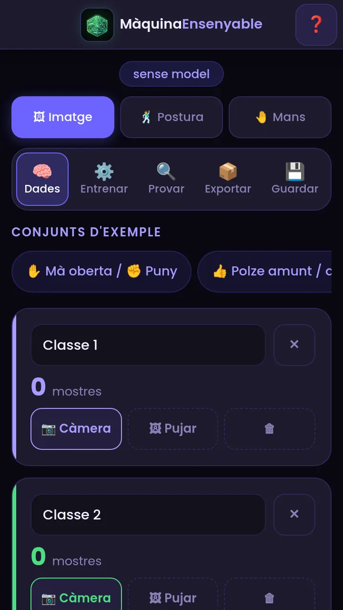
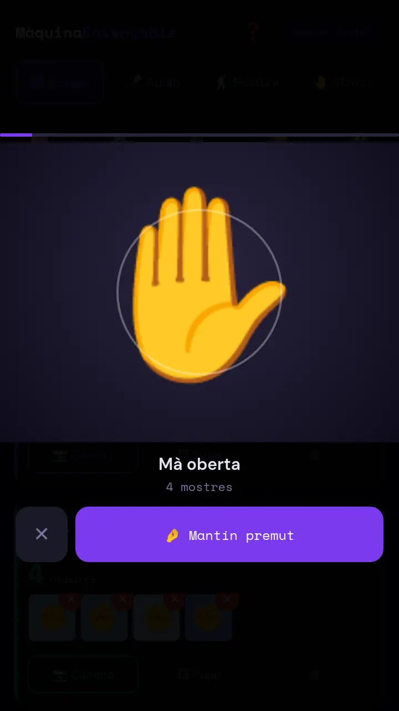
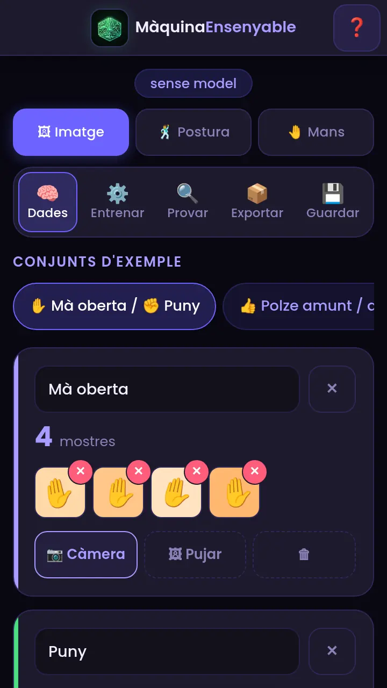
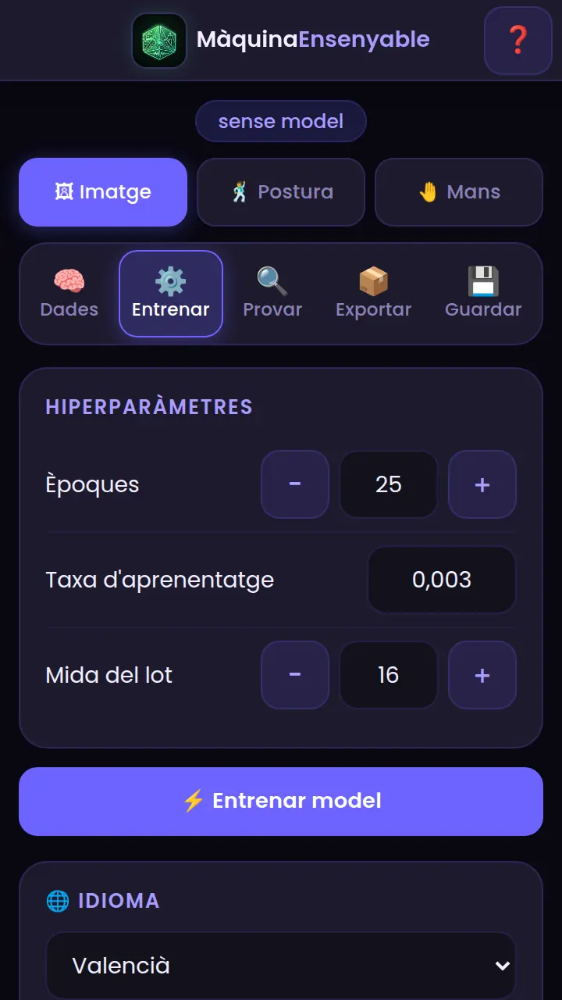
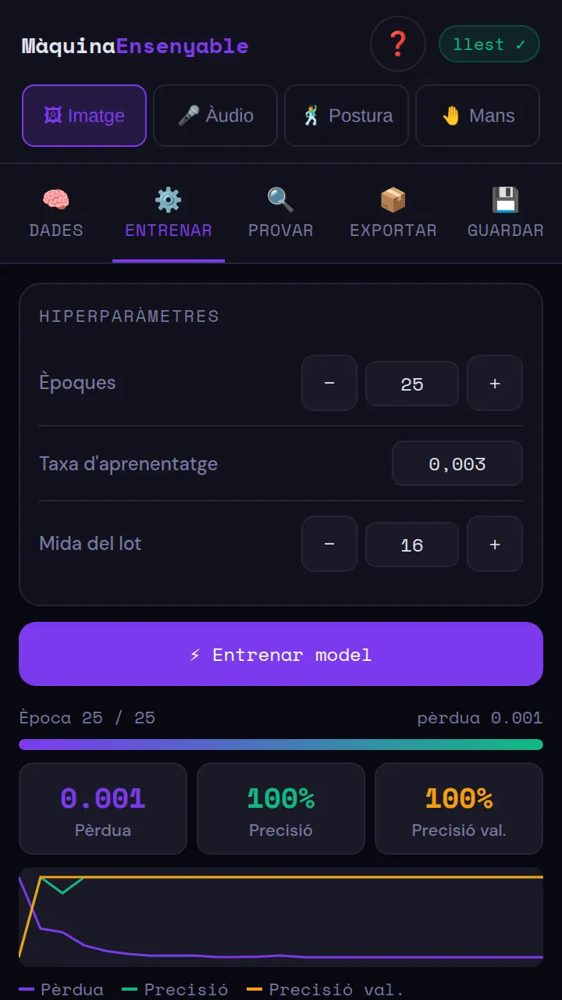
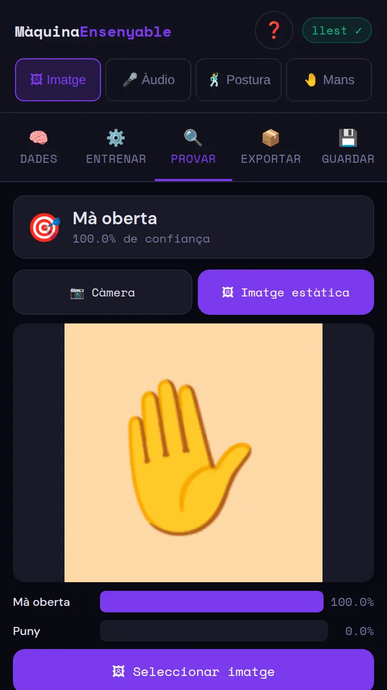
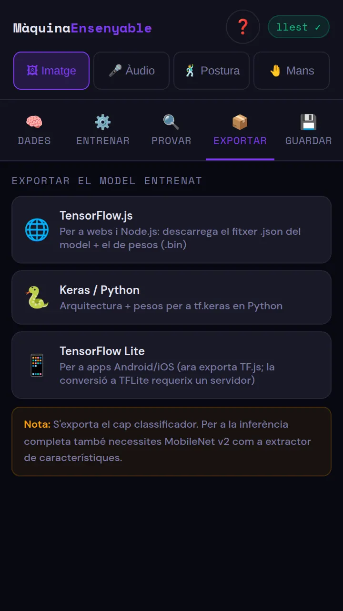
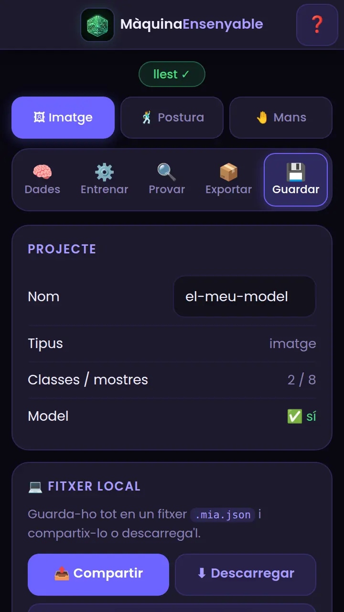

Màquina Ensenyable, pas a pas
Entrena el teu propi model d'IA en el mòbil: tipus de model, classes, mostres, entrenament, prova i exportació. Sense Bluetooth ni compte.
Què és i què necessites
Màquina Ensenyable és una aplicació per a entrenar els teus models d'IA en el mòbil: tu li dónes exemples i ella aprén a reconéixer imatges, sons, postures del cos o gestos de les mans. Sense programar i sense compte.
- Tot es processa en el teu dispositiu: imatges, sons i moviments no s'envien a cap servidor.
- Funciona en el navegador, en mòbil o en ordinador (la càmera i el micròfon necessiten el teu permís).
- Cal Internet només per a descarregar els models base la primera vegada que uses cada tipus.
El procés té cinc passos: triar tipus → crear classes i mostres → entrenar → provar → exportar o guardar.
Tria el tipus de model
Dalt de tot, sota el títol, tria què vols que reconega:
| Tipus | Reconeix | Mostres necessàries |
|---|---|---|
| 🖼 Imatge | Objectes, gestos o expressions amb la càmera o fotos. | Mínim 3 per classe; amb 20–50 de variades va molt millor. |
| 🎤 Àudio | Sons i paraules. Cada mostra dura 1 segon. | 8 o més per classe, i una classe de soroll de fons. |
| 🕺 Postura | La posició del cos (càmera frontal; que es veja el cos sencer). | Varia la distància i la posició. |
| 🤚 Mans | Gestos de la mà (càmera frontal). Només es guarda la mostra si es detecta una mà. | Varia l'angle i la llum. |

Crea les classes
Una classe és una de les coses que vols distingir (per exemple «Mà oberta» i «Puny»).
- Pestanya 🧠 Dades. Si vols començar ràpid, prem un conjunt d'exemple (xips de dalt): crea ja les classes.
- També pots tocar el nom d'una classe per a canviar-lo, o + Afegir classe per a tindre-n'hi més de dues.
- La ✕ del costat esborra la classe (l'app ho confirma).
Conjunts d'exemple de cada tipus: imatge (mà oberta/puny, polze amunt/avall, somriure/neutre, llum encesa/apagada), àudio (sí/no, amunt/avall, roig/blau), postura (mà alçada/normal, braços amunt/avall) i mans (polze, pau/puny, OK/palmell).
Afig mostres a cada classe
Cada classe necessita mostres: exemples de com és. Hi ha tres maneres:
- 📷 Càmera: s'obri la càmera; apunta a l'objecte i mantín premut el botó 🤌 «Mantín premut»: guarda fotogrames mentre prems. Es veu un comptador de mostres.
- 🖼 Pujar: tria imatges de la galeria (es poden triar diverses).
- 🎤 Àudio (només en tipus àudio): grava de 1 segon cada mostra amb el micròfon; marca una classe com Soroll de fons (silenci i soroll de l'ambient).


- Varia la distància, la llum i el fons mentre captures.
- Quantes més mostres variades, millor.
- En mans i postura, quan no es detecta ningú no es guarda res.
Entrena el model
Ves a la pestanya ⚙️ Entrenar. Els valors per defecte funcionen bé; canvia'ls només si saps el que fas:
| Paràmetre | Què és | Consell |
|---|---|---|
| Èpoques | Quantes voltes dóna el model a les teues mostres. | Més voltes aprén més, però pot memoritzar (sobreajust). |
| Taxa d'aprenentatge | Com de gran és cada pas d'aprenentatge. | Si la pèrdua oscil·la o puja, baixa-la. |
| Mida del lot | Quantes mostres processa a la vegada. | Si en tens poques, un lot menut. |
Prem ⚡ Entrenar model. Veuràs la barra d'Època, la Pèrdua (ha de baixar cap a 0), la Precisió (cap a 100 %) i la gràfica. Quan acaba, l'indicador de dalt diu llest ✓.


Prova el model
Pestanya 🔍 Provar. Pots provar-lo de dues maneres: amb la 📷 Càmera (en directe) o amb una 🖼 Imatge estàtica. Amunt apareix la classe guanyadora i el seu % de confiança, i a baix una barra per cada classe.

Exporta el model
Pestanya 📦 Exportar:
- 🌐 TensorFlow.js: per a webs i Node.js. Baixa el fitxer
.jsondel model i el de pesos.bin. - 🐍 Keras / Python: arquitectura + pesos per a
tf.keras. - 📱 TensorFlow Lite: per a apps Android/iOS (ara exporta TF.js; la conversió a TFLite necessita un servidor).

Guarda i recupera el projecte
Pestanya 💾 Guardar: pots guardar tot el projecte (classes, mostres i model) en un fitxer .mia.json:
- 📤 Compartir: obri el menú del mòbil (OneDrive, Drive, WhatsApp, AirDrop, Bluetooth, correu…) sense necessitat d'iniciar sessió en cap lloc.
- ⬇ Descarregar: guarda el fitxer en el dispositiu.
- ⬆ Carregar .mia.json: recupera un projecte guardat.

Si alguna cosa no va bé
| Què passa | Per què | Com es resol |
|---|---|---|
| No pots descarregar el model base | Sense Internet o bloqueig de xarxa. | Connecta't i prova de nou: l'app avisa quan falla la descàrrega. Una vegada descarregat, ja no cal Internet. |
| No puc capturar amb la càmera | No has donat permís. | En Chrome: 🔒 al costat de l'adreça → Permisos → Càmera/Micròfon → Permet, i recarrega. |
| No es guarden mostres en Mans | No es detecta cap mà. | Posa la mà ben visible i amb llum. |
| Recarregue la pàgina i no s'obri | L'app no funciona sense connexió. | Connecta't a Internet i torna a obrir-la. |
| El model es confon | Poques mostres o poc variades. | Afig mostres amb distància, llum i fons diferents i entrena de nou. |